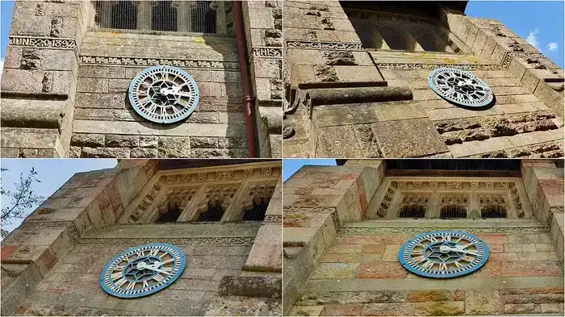
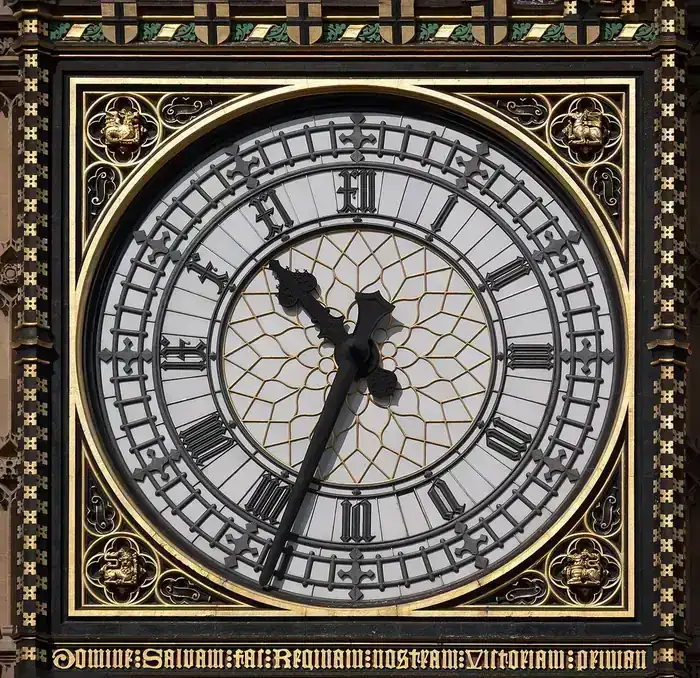

The claim
In 1991 the German publisher and independent researcher Heribert Illig, with Hans-Ulrich Niemitz, proposed that the years 614 to 911 AD — about 297 years — were fabricated.
Maps, diagrams and images




The alleged motive: the Emperor Otto III and Pope Sylvester II (the scholar Gerbert of Aurillac) wanted to be living at the turn of the first millennium. So, according to the hypothesis, they rewrote the calendar and the documentary record, inserted three centuries of invented history, and along the way invented Charlemagne and the Carolingian empire wholesale.
Illig points at real oddities: gaps in some local building sequences, the scarcity of certain kinds of evidence in parts of the period, and inconsistencies in early medieval chronology. He is not a university historian, and the hypothesis has never been accepted in the field — but it has had a long life in popular books and internet retellings.
Why it cannot be right
The decisive point is not a single document, which could in principle be forged. It is that the period is recorded independently by systems that had no contact with each other and no shared interest in Otto III's calendar.
- Tree rings. Dendrochronology produces continuous, annually resolved sequences — European oak chronologies run without a break across the whole alleged gap. A fabricated 297 years would require the trees to have cooperated.
- Eclipses and comets. Astronomical events are recorded by many civilisations and can be dated backwards with certainty. Halley's comet in 837, solar eclipses recorded in Europe, the Middle East and China, all fall where the standard chronology puts them. You cannot invent an eclipse.
- Chinese and Islamic records. Tang-dynasty annals and Arabic chronicles document embassies, trade and wars with Byzantium and the Franks throughout the period. To fabricate the gap, Otto III would have had to rewrite the records of empires that did not answer to him and did not know he existed.
- Coinage and charters. Continuous series of coins with rulers' names, and tens of thousands of dated charters and land deeds, show no 297-year discontinuity. Forging them all would be a bigger project than the one the hypothesis claims was undertaken.
- Radiocarbon and archaeology. C14 dating of buildings, burials and manuscripts lines up with the standard chronology across the alleged gap, and stratigraphy shows continuous occupation.
- Byzantium. The eastern empire kept its own continuous record and its own calendar, and it was not under papal control.
Each of these is independently sufficient. Together they make the hypothesis not merely unsupported but impossible.
It requires a conspiracy of enormous scope and zero leaks. Compare the proven conspiracies: MKUltra involved a few hundred people, lasted two decades, and leaked. Phantom time requires thousands of scribes, minters, masons and clerics across rival civilisations, over centuries, with no surviving dissenting record.
The motive does not survive arithmetic. Medieval chronologists did not agree on the date of Christ's birth to the year, and the “year 1000” was not a fixed, universally feared deadline in the way the story needs.
It is the same shape as Tartaria. Real anomalies in the record → an enormous hidden intervention → all contradicting evidence explained as part of the cover-up. The difference is that Tartaria claims the buildings were erased; phantom time claims the documents were written.
What is genuinely odd about the period
The early Middle Ages really are thinner in some kinds of evidence than the periods either side — fewer surviving buildings, fewer manuscripts, less coinage in some regions. That is a real historiographical problem, and it has real explanations: population decline after the western empire, the collapse of urban literacy, the loss of archives to fire and reuse, and the fact that parchment was expensive and frequently recycled.
The gaps are a reason to be careful with the period. They are not a warrant for inventing a conspiracy, and the moment you check the gaps against records kept by people who had never heard of Otto III, they close.
Sources for this page
- Wikipedia, “Phantom time conspiracy theory” — Illig, the claims, the refutationsen.wikipedia.org
- Wikipedia, “Dendrochronology” — continuous annual sequencesen.wikipedia.org
- NASA eclipse catalogue — historical eclipses and their dateseclipse.gsfc.nasa.gov
- History Today, on Charlemagne and the Carolingian evidencehistorytoday.com
Open resources on this topic
- PapersOpen-access articles: DOAJ · PubMed Central · Internet Archive Scholar
- BooksPublic-domain and borrowable copies: Open Library · Project Gutenberg · Google Books · Internet Archive
Cite this page
Momin, S. (2026). Phantom Time. The Larger World Archive. https://drsamonline.github.io/LARGE_GLOBE/phantom-time.htmlMomin, Sohil. “Phantom Time.” The Larger World Archive, 2026, https://drsamonline.github.io/LARGE_GLOBE/phantom-time.html.Momin, Sohil. “Phantom Time.” The Larger World Archive, 2026. https://drsamonline.github.io/LARGE_GLOBE/phantom-time.html.@misc{phantom2026phantom,
author = {Momin, Sohil},
title = {Phantom Time},
year = {2026},
howpublished = {The Larger World Archive},
url = {https://drsamonline.github.io/LARGE_GLOBE/phantom-time.html},
note = {Last reviewed 20 November 2026}
}Last reviewed 20 November 2026 · Corrections policy · this page is not peer reviewed